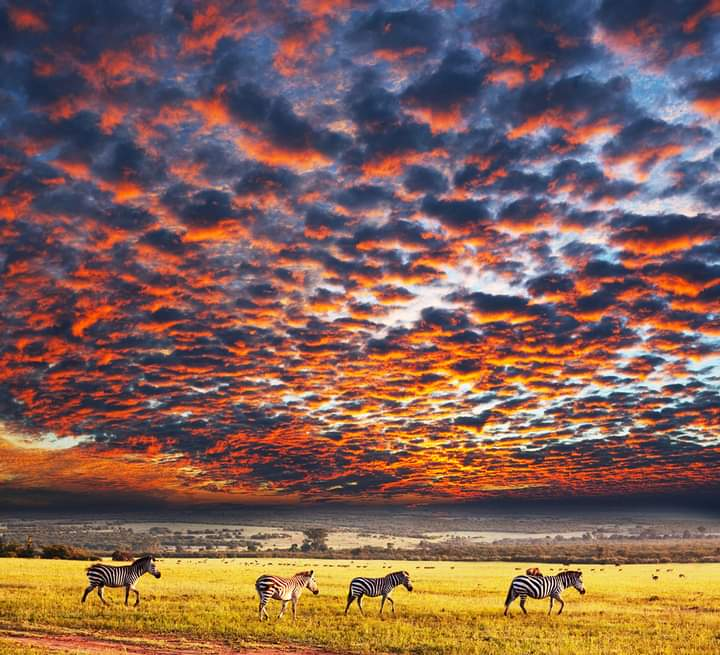

MAASAI MARA KENYA
.jpg)
Masai Mara National Park is located in Kenya along the border of Tanzania and is contiguous with the neighboring Serengeti National Park. The park region is named in honor of the Masai people group. Masai Mara stretches across an area of 580 square miles (1,510 sq km). It represents the northernmost portion of the Mara-Serengeti ecosystem. The Sand River, Talek River, and the Mara River are the primary rivers draining waters of the reserve. The park is divided into two main areas the inner portion which features pristine wilderness and the outer portion which allows for cattle of the Masai people to graze.
SUNSET AT MARA
The Masai Mara is renowned for its abundance and variety of larger plains species as well as the variety of predator species. It is considered the only place left in Kenya which resembles the wildlife population today from what it once was. Although there is an abundance, the wildlife is declining and thankfully the preserve is there to protect it. It is one of Africa's most coveted wildlife viewing destinations. Popular wildlife that might be seen in the Masai Mara include hippo, giraffe, waterbuck, reedbuck, roan antelope, warthog, eland, topi, gazelle, zebra, baboon, crocodile, various species of monkeys, and black rhino. Except for the mountain gorilla, all of Africa’s Big 7 can be part of your wildlife sightings. The Mara is home to the largest collection of lions in Kenya. Predator species are almost always atop traveler's wildlife viewing wishlist. The good news is the Mara has them. Lion, leopard, cheetah, jackal, hyena, and various species of mongoose are all found throughout the park. The Masai Mara is a portion of the larger Mara Ecosystem which combines the Koiyaki, Lemek, Ol Chorro Oirowua, Olkinyei, Siana, Maji Moto, Naikara, Ol Derkesi, Kerinkani, Oloirien, and Kimintet protective ranches. All of these efforts work together recognizing the significance of protecting the wilderness and wildlife that live in the region. Although the plains and wooded areas are beautiful, the wildlife is the reason travelers visit Masai Mara. Most people target the months between July and October with hopes of experiencing the wildebeest migration through the park. There are plenty of opportunities for historical and cultural experiences as well. You can visit Masai villages and cultural centers which will all expose you to the culture of the Masai people. You might become better at jumping if you pay close attention.
SERENGETI NATIONAL RESERVE(TANZANIA)
The park covers 14,750 km2 (5,700 sq mi)[27] of grassland plains, savanna, riverine forest, and woodlands. The park lies in northwestern Tanzania, bordered to the north by the Kenyan border, where it is continuous with the Maasai Mara National Reserve. To the southeast of the park is the Ngorongoro Conservation Area, to the southwest lies Maswa Game Reserve, to the west are the Ikorongo and Grumeti Game Reserves, and to the northeast and east lies the Loliondo Game Control Area. The landscape of the Serengeti Plain is extremely varied, ranging from savannah to hilly woodlands to open grasslands. The region's geographic diversity is due to the extreme weather conditions that plague the area, particularly the potent combination of heat and wind. The diverse habitats in the region may have originated from a series of volcanoes, whose activity shaped the basic geographic features of the plain by adding mountains and craters to the landscape.
At serengeti you will experience the seventh wonder of the world , Annual migration of wild beast and zebras The Mara River, which flows through Maasai Mara National Reserve from the Kenyan highlands to Lake Victoria, is the only permanently-flowing river in the Serengeti ecosystem.[28] The park is divided into three regions: Serengeti plains: The best-known feature of the Serengeti is the almost treeless grassland in the south. It has kopjes, granite formations that serve as observation posts for predators. The Volcanic Grasslands is a edaphic plant community that grows on soils derived from volcanic ash from nearby volcanos.[citation needed] Western corridor: The main geographic feature is the pair of rivers, Grumeti and Mbalageti. There are big groups of riverine forest and some small mountain ranges. The great migration passes through the corridor from May to July. It stretches to Lake Victoria. The area is flatter than the northern parts of the park and more densely covered with plants than the southern plains.[citation needed] Northern Serengeti: the landscape is dominated by open woodlands, predominantly Commiphora and hills, ranging from Seronera in the south to the Mara River on the Kenyan border. It is remote and relatively inaccessible.[citation needed] Human habitation is forbidden in the park except for the Tanzania National Parks Authority staff, researchers and staff of the various lodges, campsites, and hotels. The main settlement is Seronera with its primary airstrip.
NGORONGORO CRATER LODGE( TANZANIA)
Ngorongoro Crater Lodge has been called the game lodge at the top of the world. Between the natural riches of the Crater spread out at its feet and the incredible architecture, it’s easy to believe that you have entered a realm of pure fantasy. Nearly three million years old, the ancient caldera shelters one of the most beautiful wildlife havens on earth. Endangered black rhino are protected within its rim, giant tusked elephant wander the forests, male lion stalk the grasslands and flamingo crowd the soda lakes. Nowhere else on earth can you wake up among all the trappings of an elegant baroque châteaux that transports you into one of the most famous African landscapes. An eclectic blend of teak panelling, Victorian furnishings and whimsical African touches creates a sumptuous atmosphere that is as elegant and unique as the Crater itself. In this place of dramatic contrasts, anything is possible and the natural luxury of the beautiful setting ensures the dramatic interior of your suite blends perfectly with its stilted thatch architecture. Divided into three camps, 30 suites with banana leaf ceilings and grass roofs provide an intimate and exclusive experience. Each camp has its own sitting and dining areas, with private butlers who provide warm, personal service. With ever-changing views as mists swirl over the huge wildlife cauldron below, the location is truly breathtaking. Guests can be forgiven for losing track of which era, or even continent, they are experiencing at this lodge. Everything is chosen to delight the imagination and enhance the spectacular views of the